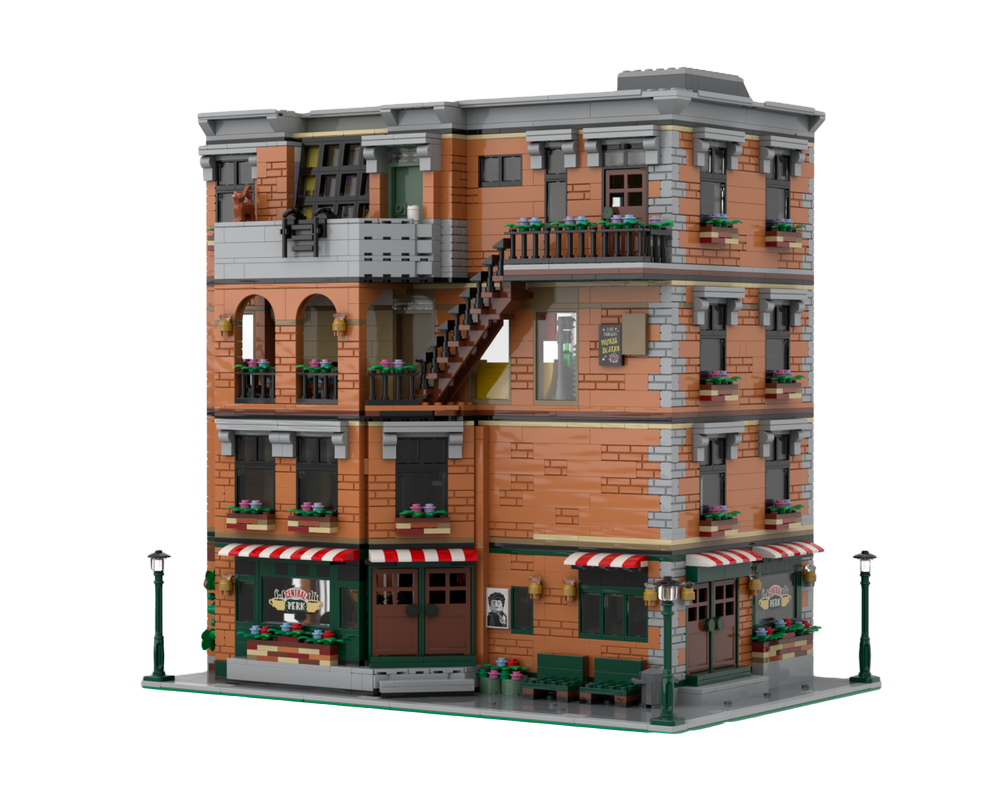

On September 22, 1994, the TV show Friends premiered on NBC. Airing 10 seasons, it was consistently one of the most popular shows on television, and after decades of syndication, one of the most popular in history. And for a generation of young 20-somethings, it shaped their views of, and in many ways reflected their experience of, what their lives were supposed to be like. While the show was shot in Burbank, California, almost all it was supposed to take place in Greenwich Village, where the apartments of all of its main characters were located. Thus it also shaped a generation’s views of what living in Greenwich Village, even if your job was a joke and you were broke, was like. In honor of the show’s 25th anniversary, we take a look at the places where Ross, Rachel, Phoebe, Joey, Monica, and Chandler were supposed to have lived, and how the TV world Friends created lined up (or didn’t) with reality.
The Friends apartment building, 90 Bedford Street
The spot in Greenwich Village most associated with Friends, and where crowds of tourists can be seen taking pictures all hours of every day, is the apartment building at 90 Bedford Street. Located on the corner of Grove Street, it’s where at one time or another all six of the gang lived (Ross briefly with Chandler and Joey, and Phoebe with Monica before the show began and Rachel moved in). Some elements of the building do actually line up with what is seen on the show, while others are a bit more off base.
Like in the show, this is a walk-up building, with residential uses above the first floor and commercial space on the ground floor, where the gang’s favorite hangout, ‘Central Perk,’ was supposed to be located.
Joey and Chandler’s apartment

The actual 90 Bedford Street was constructed in 1898-99 and is an ‘old law’ tenement, also sometimes referred to as a ‘dumbbell’ tenement. This is because the law at the time required extremely minimal cut-out air shafts on the buildings to provide a window and some ‘air’ in every bedroom, which often made the buildings look like dumbbells when viewed from above. The required air shafts were typically so narrow though that you could literally reach out and stick your arm through the window of an adjacent tenement (or worse, face a blank wall of an adjacent building just a few inches away if there was no mirroring indentation).
This lines up nicely with how Joey’s (and briefly Rachel’s) bedroom faces the apartment of ‘Morning Guy’ right across the narrow air shaft, who serenades Joey (and much to her chagrin, Rachel) with a rousing round of “Morning’s Here!” each a.m.
The modest proportions of Joey and Chandler’s apartment, with the combined kitchen/living room, is also not wildly off-base for a tenement like this, though one might argue that a mostly out-of-work actor and a whatever-it-is-Chandler-does-for-a-living-guy would be unlikely to afford even that apartment in the West Village.
However, it’s not as unrealistic as you might think for the time. Older multi-unit buildings like this typically fell under New York City rent stabilization rules, which only allowed for very modest annual or bi-annual rent increases from the time the rules were established in 1947 when this apartment was likely very cheap. Did landlords get around this in high-demand areas like Greenwich Village, and often remove apartments from the rent stabilization system, legally or otherwise? Yes, but many did not, and under the old rules, even when someone moved out, only a modest increase in the rent was allowed for the new rent-stabilized tenant, thus providing little incentive to try to push out long-standing tenants, and keeping rents low.

But in 1993, the New York State Legislature passed a series of changes to the rent regulation laws that allowed landlords to legally dramatically increase rents on stabilized apartments, especially once a tenant moved out, and made it much easier to legally take apartments out of the rent regulation system and remove the rent increase caps. It’s not unrealistic to think that Joey and Chandler might have moved in before those rules were changed in late 1993, getting in under the wire to secure and maintain an affordable rent-stabilized apartment.
Monica and Rachel’s apartment
Monica and Rachel’s apartment (formerly Monica and Phoebe’s, briefly Joey and Chandler’s, and eventually Monica and Chandler’s) is often characterized as being a wildly unrealistic portrayal of the kind of apartment these sorts of folks could afford, or that would even exist. While much of that criticism is justified, there are a surprising number of things about the apartment that do hew close to reality, or at least a possible reality.


No tenement apartment would have the sprawling, rambling layout of Monica and Rachel’s, nor a floor-to-ceiling window with a terrace. That said, it’s a not-unrealistic portrayal of another kind of commonly-found apartment in older buildings in Greenwich Village, the studio atelier. These apartments, added on top of 19th century walk-up residential buildings (usually rowhouses which had been carved up into apartments) in the early 20th century, do actually tend to look like Monica and Rachel’s apartment, with an open, loft-like space, sloped floor-to-ceiling industrial casement windows often set back from the edge of the building (which, conceivably, could accommodate the type of terrace of the girls’ apartment). Although it’s virtually unheard of to have this kind of apartment atop a tenement like 90 Bedford Street, scores of other older walk-up apartment buildings in the immediate vicinity do.
Of course, the other oft-criticized element of Monica and Rachel’s apartment is that a low-level chef and a waitress/junior buyer at Bloomingdales could never get or afford an apartment like that in Greenwich Village. But here as well, reality and TV may not be as misaligned as some may reflexively assume.
The show does at least offer the explanation that the apartment was Monica’s grandmother’s and that when she passed away, Monica inherited it. There are elements of truth and fiction to this explanation, some of it (perhaps coincidentally) rooted in some complex historical reality.
New York’s rent and housing laws do in fact grant grandchildren succession rights to rent-stabilized apartments (which this one would have to have been for Monica and Rachel to afford), and if her grandmother had been living there for several decades, the rent could have been quite reasonable. However, in order to qualify for succession rights (i.e. the ability to stay in a rent-stabilized apartment and at the existing rent-stabilized rent), a grandchild would need to show that they had been living there as their primary residence along with the leaseholder (the grandparent) for some time before they died, usually at least a year. The show never really addresses whether or not this is the case, but it’s not the most unrealistic scenario that Monica could have lived with her elderly or ailing grandmother before her death, or convinced her landlord that she had.

But there’s another curious element of potential historic reality to this scenario. 90 Bedford Street was designed by Schneider and Herter architects, both New York architects known in the late 19th and early 20th centuries for designing tenements, apartment buildings, factories, and synagogues, typically for German-Jewish clients like themselves, mostly on the Lower East Side. As was often the case at this time, builders (especially of tenements) tended to market their buildings towards those of a similar ethnic background, and tenements of Schneider and Herter were often marketed to Jewish immigrants.
Ross and Monica were supposed to be Jewish, so their grandmother likely was as well. And Geller is a German name. So might she, or even her parents or family, have been among the waves of Jewish immigrants who came to New York in the late 19th and early 20th centuries, and been one of the early occupants of this tenement, passing a valued apartment along from one generation to the next? It’s actually not the most unlikely of scenarios.
But one element producers clearly got wrong were the stairs and hallways of the building. An old law tenement would have very, very narrow stairs and hallways (especially this one; 90 Bedford Street is, at its very widest, only a little over 25 feet, as it replaced a small rowhouse previously on the site). In fact, typically old law tenement hallways leave just enough room for two people to squeeze past each other, as, like everything about these buildings, they were built with the minimal amenities legally necessary or required, to house the poorest New Yorkers. It definitely would not offer enough room for three people to lie around and eat cheesecake off the floor, or for Danny (the Yeti) to host a party there.
And Monica and Rachel and Joey and Chandler switching apartments over a bet? If those were rent-stabilized apartments, that could definitely be grounds for eviction.
Ross’ apartments
For the first several seasons of the show, Ross is shown to live at Washington Square Village, the modernist superblock of apartments built by Robert Moses in the late 1950s just south of Washington Square Park. Ross’ apartment is relatively modern and roomy (for an unfancy Manhattan apartment), which is certainly not unrealistic for the real-life location.
What’s less realistic is that in the 1960s, this mammoth complex of apartments was taken over by New York University, who started placing faculty in the units whenever they would become available (and eventually combining units into larger and larger “super units” to attract big-name faculty). So while many old-time remained in the complex for years, by the 1994 premiere of Friends these non-NYU tenants were already a relatively small minority and would have to have lived in their unit before NYU took over in the 1960s. Perhaps Ross had another grandparent who was an NYU faculty member from whom he had taken over the apartment?
Somewhat ironically, in later seasons, after his divorce from Emily and losing his Washington Square Village Apartment, Ross does teach for a while at NYU; maybe they should have reversed the order of those storylines.
Ross’ later residence, when he takes over “Ugly Naked Guy’s” place, is even more full of notable paradoxes and contradictions. The apartment appears to be across a rear courtyard from Monica and Rachel’s, based upon the views which show other buildings wrapping around theirs as they look out their huge window towards the other apartment. This “across the courtyard” theory is buttressed by the episode where the gang, wondering if ugly naked guy is dead or just sleeping, fashion a long “poking device” which they aim through their window across the way and into his, to see how he reacts (“he’s alive!” shouts Phoebe, in mock-1950s B-movie hysteria).

But the establishing exterior shots used before scenes in Ross’ apartment clearly show the camera moving from 90 Bedford Street across the street to 17 Grove Street. Not only does that make the wrap-around rear courtyard view nonsensical, but as quaintly-scaled as Grove Street is, it would have to be one heckuva giant poking device to not only make it across the street but for even six people to be able to maneuver it appropriately to hit its target.
It should be noted that 17 Grove Street, like 90 Bedford Street, is an old law tenement of a similar dumbbell configuration, dating to 1891. This makes Ross (and ugly naked guy’s) generously proportioned apartment, with large picture windows, a bit of a fantasy. So too are the ample hallways of the building and the restored industrial doors of the apartments (remember when Joey went searching the building for “hot girl’s” apartment and kept coming back to Ross’?). These would be more typical of a converted loft building, which is certainly common in the West Village. But 17 Grove Street is definitely not one of them.
Phoebe’s Apartment
Finally, Phoebe (and for a while Rachel) lived at 5 Morton Street, apartment number 14 (as per the address Phoebe gave over the phone to the guy who left his phone in Central Perk for him to retrieve it from her). Incredibly, this real-life address is all of about two blocks from where the other five Friends lived.
Like Monica, Phoebe apparently got her amazingly well-located apartment through her grandmother (both a plausible explanation and an unbelievable coincidence and stroke of luck). Like the other three buildings, 5 Morton is also a tenement, albeit an even older one, dating to 1871. This makes this a “pre-law” tenement, which means it was built before even those incredibly modest ‘old laws’ required the little air shaft carve-outs for windows. When 5 Morton Street was built, it had no interior air shafts or indoor plumbing; there were originally two apartments per floor, each likely housing one or more very large, multi-generational families and possibly borders. The only windows were for rooms which faced the street or the tiny rear yard (none of which, I guess, would have been shocking to someone like Phoebe, who had previously “lived on the streets”).
The 1880 census shows 15 families living in the building’s eight tiny apartments, most immigrants from Germany, France, Ireland, and England. By 1930, almost all the residents were first-generation Italian immigrants. But by 1953, the building was renovated, and the two apartments per floor were chopped up into four even smaller apartments (now nineteen total, with the ground floor commercial space converted to apartments), thus making Phoebe’s apartment number of 14 finally possible.
After the renovation and in the post-War years, the building housed many fewer large extended families, and many more singles, couples, and roommates. On this account, the show’s representation of Phoebe’s living situation is somewhat realistic. Of course, the tiny four-to-a-floor apartments would have borne little resemblance to the relatively generous space Phebes called home.

So in the end, a combination of incredible luck, timing, and family connections could have made the friends’ living situations, or at least some aspects of them, theoretically possible. That said, any 20-something without a real job arriving in Greenwich Village in 1994 (to say nothing of today) expecting to find and afford an apartment like the ones on Friends would likely have been sorely disappointed. I guess no one told them life was gonna be that way.